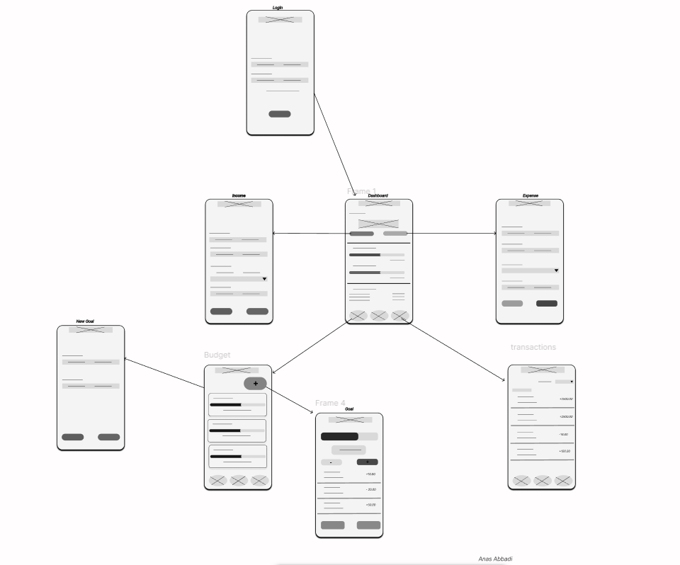
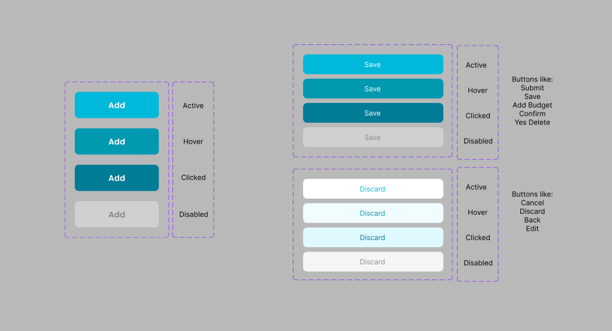
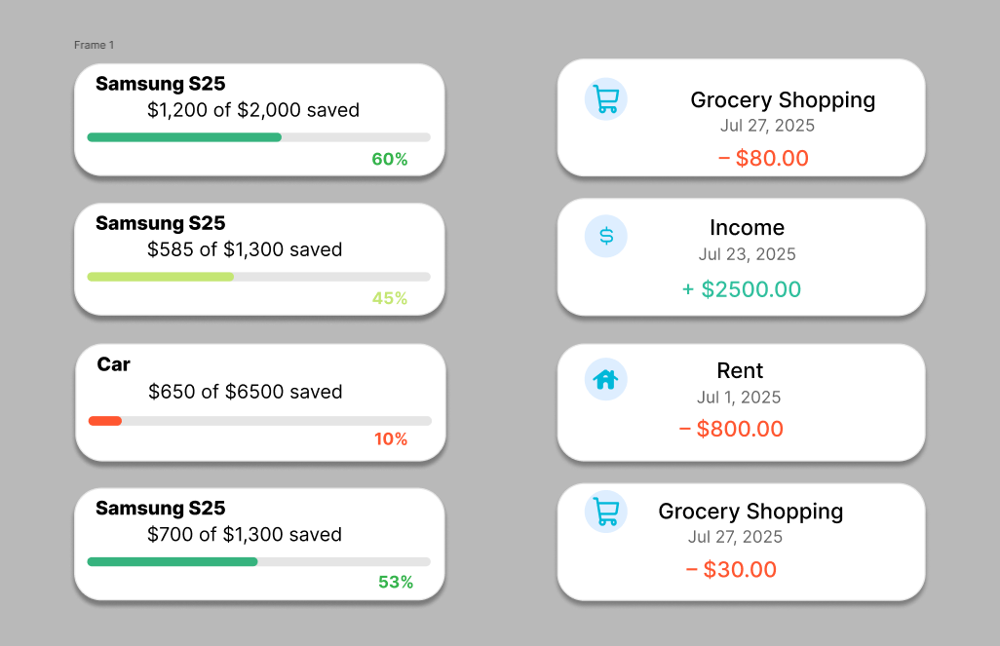
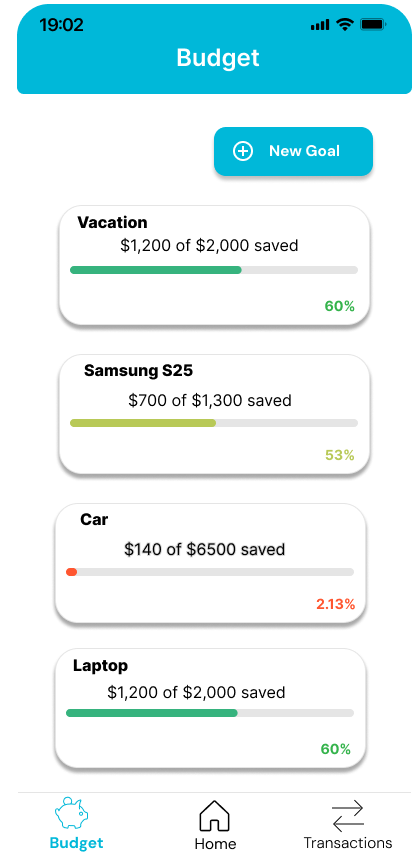
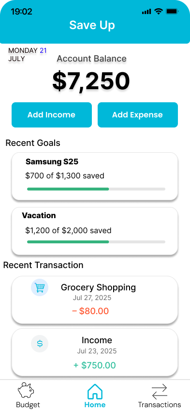
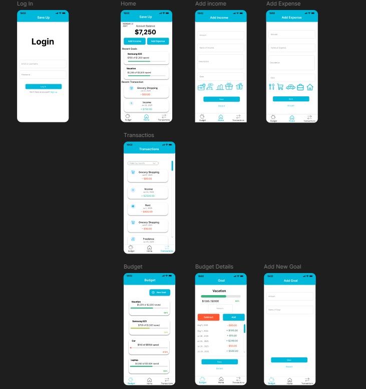

SaveUp – Budgeting App (UX/UI Case Study)
A complete Figma UX/UI project including wireframes, design system, and high-fidelity UI screens.
📌 Overview
SaveUp is a mobile budgeting app designed to help users track expenses, manage income,
and follow their savings goals. This case study showcases the full UX/UI design process —
from early wireframes to a polished interactive prototype.
🎯 My Role
- UX/UI Designer
- Wireframes & App Flow
- Design System Creation
- High-Fidelity Interface Design
- Component & Variant Setup
- Interactive Prototyping in Figma
🛠️ Tools
- Figma (Auto Layout, Components, Variants, Prototyping)
- Icon System
- Mobile-first Layout
- Color & Typography Standards
🧱 Low-Fidelity Wireframes

🎨 Design System – Buttons

🗂️ Cards (Goals & Transactions)

📊 Budget Page

✨ High-Fidelity Home Screen

📱 Complete Screen Collection

📚 What I Focused On
- Clean, simple mobile UI
- Consistent spacing and alignment
- Clear separation between income (green) and expenses (red)
- Easy visualization of financial goals
- Reusable components & scalable design system
- Soft shadows and rounded cards
📝 What I Learned
- Building a full component & variant structure
- Designing cohesive UI across multiple screens
- Improving visual hierarchy
- Creating a readable financial dashboard
- Structuring a UX/UI project from start to finish